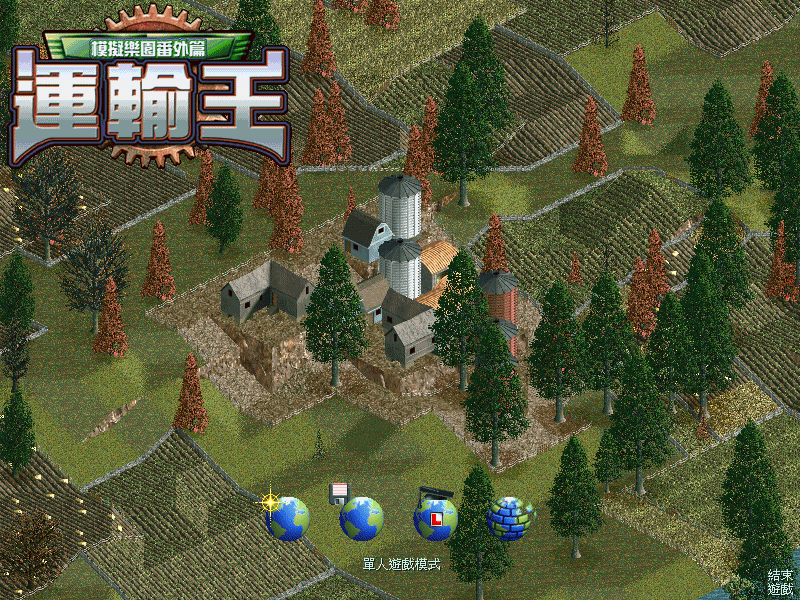
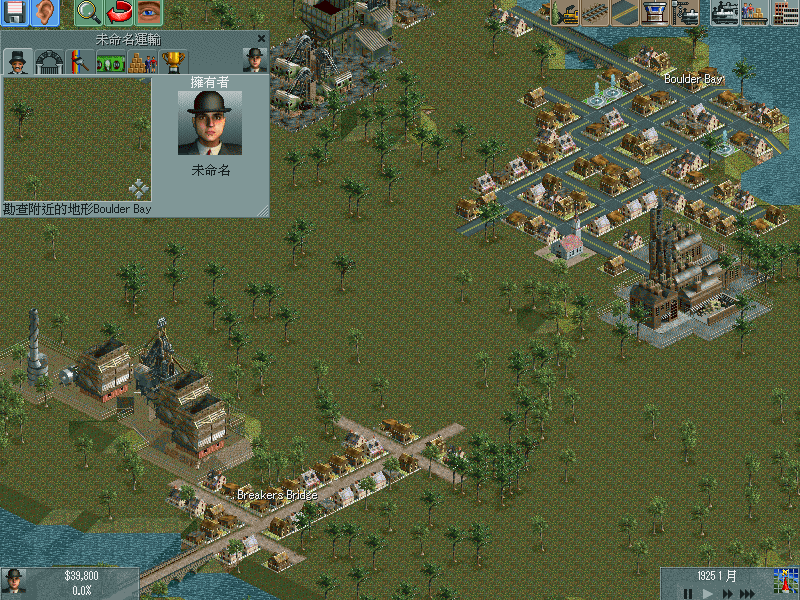

名稱：模擬樂園番外篇：運輸王／運輸之王／運輸大亨／運輸帝國 (Chris Sawyer's Locomotion，中文版)
簡介：Chris Sawyer 2004年出品的運輸業建造經營模擬遊戲，由Atari代理發行，為1994年
「運輸大亨（Transport Tycoon）」的續作 [待補]。


備註：繁中版為4.02.170版
保護：光碟SecuROM 5.03+序號（EUYM-PEVT-TWYU-RNXE-PLCA-754U）
檔案：nocd_eng.rar = 英文1.76免光碟檔（繁中版使用後變英文版）